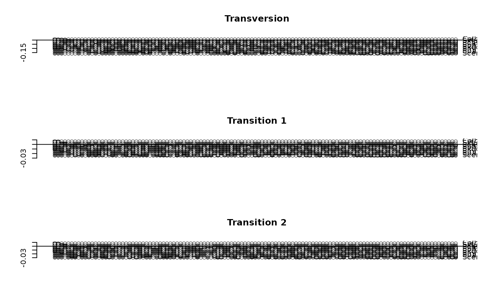
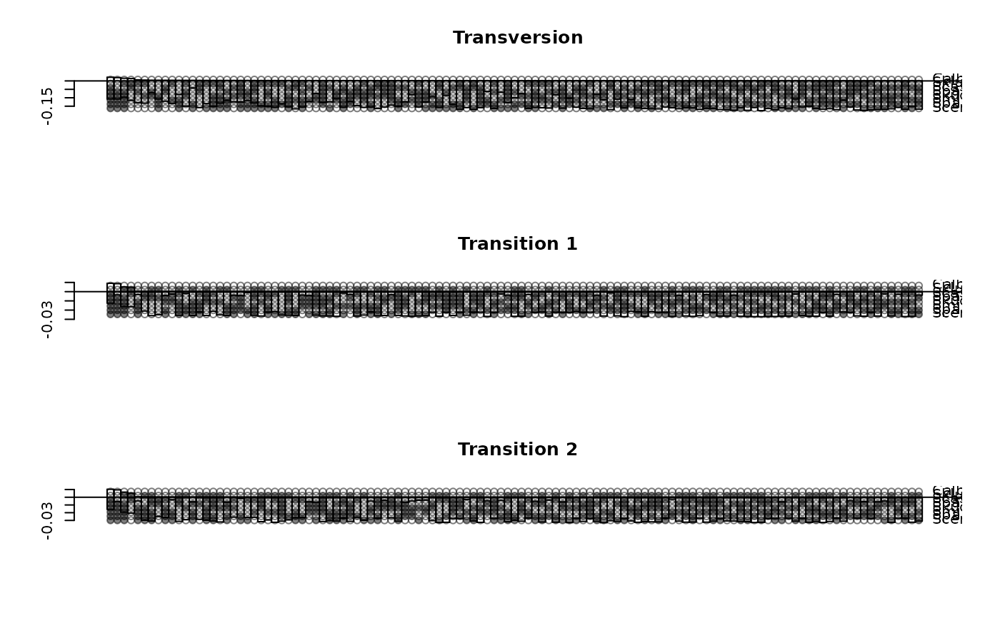

A collection of functions to perform Hadamard conjugation. Hadamard matrix H with a vector v using fast Hadamard multiplication.
Usage
hadamard(x)
fhm(v)
h4st(obj, levels = c("a", "c", "g", "t"))
h2st(obj, eps = 0.001)Details
h2st and h4st perform Hadamard conjugation for 2-state
(binary, RY-coded) or 4-state (DNA/RNA) data. write.nexus.splits
writes splits returned from h2st or
distanceHadamard to a nexus file, which can be
processed by Spectronet or SplitsTree.
References
Hendy, M.D. (1989). The relationship between simple evolutionary tree models and observable sequence data. Systematic Zoology, 38 310–321.
Hendy, M. D. and Penny, D. (1993). Spectral Analysis of Phylogenetic Data. Journal of Classification, 10, 5–24.
Hendy, M. D. (2005). Hadamard conjugation: an analytical tool for phylogenetics. In O. Gascuel, editor, Mathematics of evolution and phylogeny, Oxford University Press, Oxford
Waddell P. J. (1995). Statistical methods of phylogenetic analysis: Including hadamard conjugation, LogDet transforms, and maximum likelihood. PhD thesis.
Author
Klaus Schliep klaus.schliep@gmail.com
Examples
H <- hadamard(3)
v <- 1:8
H %*% v
#> [,1]
#> [1,] 36
#> [2,] -4
#> [3,] -8
#> [4,] 0
#> [5,] -16
#> [6,] 0
#> [7,] 0
#> [8,] 0
fhm(v)
#> [1] 36 -4 -8 0 -16 0 0 0
data(yeast)
# RY-coding
dat_ry <- acgt2ry(yeast)
#> Warning: Found unknown characters (not supplied in levels). Deleted sites with unknown states.
fit2 <- h2st(dat_ry)
lento(fit2)
 # write.nexus.splits(fit2, file = "test.nxs")
# read this file into Spectronet or SplitsTree to show the network
fit4 <- h4st(yeast)
old.par <- par(no.readonly = TRUE)
par(mfrow=c(3,1))
lento(fit4[[1]], main="Transversion")
lento(fit4[[2]], main="Transition 1")
lento(fit4[[3]], main="Transition 2")

par(old.par)
# write.nexus.splits(fit2, file = "test.nxs")
# read this file into Spectronet or SplitsTree to show the network
fit4 <- h4st(yeast)
old.par <- par(no.readonly = TRUE)
par(mfrow=c(3,1))
lento(fit4[[1]], main="Transversion")
lento(fit4[[2]], main="Transition 1")
lento(fit4[[3]], main="Transition 2")

par(old.par)